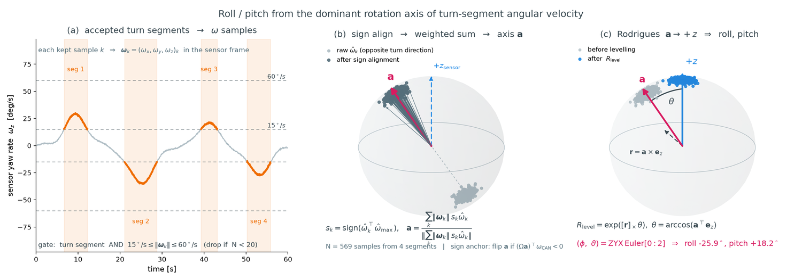

A2 · Motion-plane alignment
A wheeled platform on a locally planar road rotates about one axis: the plane normal. Whatever direction that axis has in a sensor frame is the sensor's mounting tilt. A2 recovers it from the sensor's own angular velocity, with no second sensor involved.
1 The geometric statement
Within one calibration segment the platform follows a single local motion plane. Its angular velocity is then parallel to that plane's normal at all times; only the magnitude changes. Expressed in the frame of a rigidly mounted sensor, this becomes a collinearity statement whose direction is fixed by the mounting rotation.
2 Procedure

Select informative samples
Keep samples inside accepted turns whose angular-rate magnitude lies between the lower information bound and the upper sanity bound. Below the lower bound the direction is noise; above the upper bound the sample is more likely an odometry failure than a real manoeuvre.
Align sample signs
The measured vectors point along ±aj depending on turn direction. They are sign-aligned against the strongest sample so that left and right turns reinforce rather than cancel each other.
Form the representative axis
Sum the aligned unit directions weighted by their magnitudes and normalize. Fast rotation carries more directional information than slow rotation, so magnitude weighting is the natural estimator here. Trimming is disabled by default; the sample gate already removes the dangerous tails.
Fix the branch
The magnitude-weighted axis is defined only up to a 180° flip. The branch consistent with a coarse initial mounting orientation is selected; the systematic treatment is in A3.
Level
Build the minimum Rodrigues rotation taking aj to the vertical axis ez. Its first two ZYX Euler angles are the reported roll and pitch.
3 Why the reported roll and pitch are relative
The recovered axis is the normal of whatever plane the platform actually travelled on, not of an ideal horizontal plane. Road cross-slope, grade and static suspension attitude all enter every sensor's estimate identically, because all sensors ride the same body.
That shared component is exactly what reference-relative composition removes. Comparing sensor j against reference r through rotation-matrix composition cancels the common plane term to first order and leaves the genuine difference in mounting tilt, which is the quantity a calibration ground truth can be compared against.
4 Outputs and diagnostics
| Field | Meaning |
|---|---|
roll_deg, pitch_deg | Estimated mounting tilt of this sensor |
axis_vector | Unit axis aj in the raw sensor frame |
level_matrix | Rotation taking aj to +z |
| viz arrays | Per-segment rotation vectors and the fitted representative axis, for overlay plots |
- Fewer than 20 gated samples → the channel is dropped at stage
axis; nothing downstream runs for it. - Planar streams that carry no wx/wy at all bypass this module entirely with roll = pitch = 0 and an identity levelling matrix — see the caveat in A3.
- Diagnostic plots: angular-velocity samples on the unit sphere with the fitted axis; before/after sign alignment; levelled versus raw angular-velocity trajectories.
See also
- A3 · Rotation-sign gauge — resolving the 180° branch
- A4 · X, Yaw and slip — consumes the levelled twist
- Observability decomposition — where roll and pitch sit among the six degrees of freedom